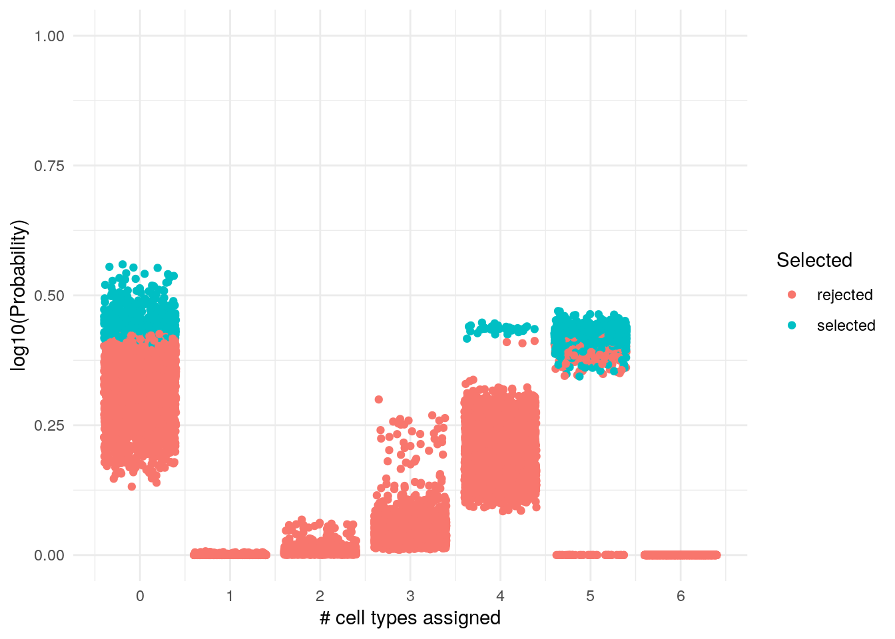

Example of using BaseSet in the scRNAseq
11 oct 2019
Here I’ll follow AUCell vignette until we reach the point where BaseSet becomes useful.
Initial setup
As explained here I follow the AUCell vignette. Later on I use BaseSet to explore the value of fuzzy sets.
library("GEOquery")
library("data.table")
library("AUCell")
library("GSEABase")
library("dplyr")
library("BaseSet")
library("ggplot2")
library("reshape2")This are the libraries used
Get data
We use GEOquery to get the data
geoFile <- getGEOSuppFiles("GSE60361",
makeDirectory = FALSE
)
gzFile <- grep(".txt.gz", basename(rownames(geoFile)),
fixed = TRUE,
value = TRUE
)
txtFile <- gsub(".gz", "", gzFile, fixed = TRUE)
gunzip(filename = gzFile, destname = txtFile, remove = TRUE)As we already have downloaded the file we use:
geoData <- fread("GSE60361_C1-3005-Expression.txt.gz", sep = "\t")
geneNames <- unname(unlist(geoData[, 1, with = FALSE]))
exprMatrix <- as.matrix(geoData[, -1, with = FALSE])
rownames(exprMatrix) <- geneNamesGene set annotation
Now we obtain the genes that identify each cell type following the vignette. This is a crucial step, but for the moment we follow the vignette.
# Save for future use
gmtFile <- file.path(system.file("examples", package = "AUCell"),
"geneSignatures.gmt")
geneSets <- getGmt(gmtFile)
geneSetsSubset <- subsetGeneSets(geneSets, rownames(exprMatrix))
nGenes(geneSetsSubset)
## Astrocyte_Cahoy Neuron_Cahoy Oligodendrocyte_Cahoy
## 2137 1607 1751
## Astrocyte_Lein Neuron_Lein Microglia_lavin
## 34 60 603AUCell core
Now we rank the expression matrix and we use the default setting.
cells_rankings <- AUCell_buildRankings(exprMatrix, nCores = 1, plotStats = TRUE)
## Quantiles for the number of genes detected by cell:
## (Non-detected genes are shuffled at the end of the ranking. Keep it in mind when choosing the threshold for calculating the AUC).## min 1% 5% 10% 50% 100%
## 770.00 1048.04 1434.00 1747.60 3630.00 8146.00
cells_AUC <- AUCell_calcAUC(geneSets, cells_rankings)
## Genes in the gene sets NOT available in the dataset:
## Astrocyte_Cahoy: 481 (18% of 2618)
## Neuron_Cahoy: 429 (21% of 2036)
## Oligodendrocyte_Cahoy: 476 (21% of 2227)
## Astrocyte_Lein: 12 (26% of 46)
## Neuron_Lein: 13 (18% of 73)
## Microglia_lavin: 16 (3% of 619)
pars <- par(mfrow = c(2, 3))
cells_assignment <- AUCell_exploreThresholds(cells_AUC, plotHist = FALSE, assignCells = TRUE)
par(pars)
cellsAssigned <- lapply(cells_assignment, function(x) x$assignment)Note that there is the recommendation to see individually which is the appropiate threshold.ç It might be difficult selecting it right with 6 cells types, and impossible with tenths or hundreds of cell lines.
cell_by_type <- lengths(cellsAssigned)
sum(cell_by_type) # Total number of cells assigned
## [1] 4969
ncol(exprMatrix) # Initial number of cells
## [1] 3005We can see that there are some cells assigned to several cell types!
assignmentTable <- melt(cellsAssigned, value.name = "cell")
colnames(assignmentTable)[2] <- "geneSet"
assignmentMat <- table(assignmentTable[, "geneSet"], assignmentTable[, "cell"])
assignmentMat[, 1:2]
##
## 1772058148_A03 1772058148_A05
## Astrocyte_Cahoy 1 1
## Astrocyte_Lein 1 0
## Microglia_lavin 0 1
## Neuron_Cahoy 0 0
## Neuron_Lein 0 0
## Oligodendrocyte_Cahoy 1 0
table(apply(assignmentMat, 2, sum))
##
## 1 2 3 4
## 794 1883 103 25So the default assigns almost all the cells in several cell lines!! In this case we have 6 cell lines, however, in real cases we might be interested in hundreds of cell lines. This would make impossible to analyze them one by one.
Checking with BaseSet the cell assignment
BaseSet implements a new class (TidySet), that works with sets. Here the sets are the cell types and the elements are the cells. In this case the membership of a cell to a given cell type is not binary (0/1). It is designed to work well with values between 0 and 1.
AUC <- getAUC(cells_AUC)
TS <- tidySet(t(AUC))First we will explore how probable is for each cell to be in several cell types:
es <- element_size(TS)
es %>%
group_by(elements) %>%
filter(probability == max(probability)) %>%
ungroup() %>%
count(size, sort = TRUE)
## # A tibble: 3 x 2
## size n
## <dbl> <int>
## 1 5 2370
## 2 0 596
## 3 4 39Each cell is in 4 cell lines or in 5 or in none cell types! If this cell markers were accurate we see that the prediction made by AUCells assigns equally likely several different cell types or none. This highlights that the arbitrary threshold that we can set doesn’t work well when we have to account for multiple sets.
ggplot(es) +
geom_jitter(aes(size, probability)) +
labs(x = "# cell types assigned", y = "Probability", title = ) +
scale_x_continuous(breaks = c(0, 1, 2, 3, 4, 5, 6)) +
scale_y_continuous(limits = c(0, 1)) +
theme_minimal()We can see that many don’t have any assigned cell and some have a
selected_sizes <- es %>%
group_by(elements) %>%
mutate(S = case_when(
probability == max(probability) ~ "selected",
TRUE ~ "rejected"))
selected_sizes %>%
ggplot() +
geom_jitter(aes(size, probability, col = S)) +
labs(x = "# cell types assigned", y = "log10(Probability)", col = "Selected") +
scale_x_continuous(breaks = c(0, 1, 2, 3, 4, 5, 6)) +
scale_y_continuous(limits = c(0, 1)) +
theme_minimal()
We can see that this way were are the selected number of cell types and their probability. The range of selection of the size is pretty much on the top. We can find them easily:
selected_sizes %>%
subset(S == "selected") %>%
subset(probability %in% range(probability))
## # A tibble: 2 x 4
## # Groups: elements [2]
## elements size probability S
## <chr> <dbl> <dbl> <chr>
## 1 1772066107_E06 5 0.344 selected
## 2 1772071040_D01 0 0.560 selectedIncorrectly assigned cells
We’ll create a function for this. In this function we test that the probability of a number of sets is higher than the sum of the other sizes.
comp_assign <- function(element_size, size) {
diff0 <- element_size %>%
filter(size != {
{
size
}
}) %>%
group_by(elements) %>%
summarise(s = sum(probability))
eq0 <- element_size %>%
filter(size == {
{
size
}
})
md <- merge(diff0, eq0) %>%
select(-size)
co <- md %>%
filter(probability >= s) %>%
count() %>%
.[, , drop = TRUE]
if (co != 0) {
md %>%
filter(probability >= s) %>%
pull(elements) %>%
as.character()
} else {
NA
}
}
cell0 <- comp_assign(es, 0)We can find that this only happens with some cells that are not assigned a set.
cell0
## [1] "1772058171_A01" "1772058171_A06" "1772058171_A12" "1772058171_E11"
## [5] "1772058171_E12" "1772058171_G04" "1772058171_G09" "1772058177_A05"
## [9] "1772058177_D01" "1772058177_H02" "1772060224_C09" "1772060225_H04"
## [13] "1772060226_F08" "1772062111_F09" "1772062111_H12" "1772062113_H07"
## [17] "1772062128_D06" "1772063070_F11" "1772063071_B06" "1772063071_B12"
## [21] "1772063071_D01" "1772063071_D02" "1772063071_D11" "1772063071_E02"
## [25] "1772063071_F12" "1772063071_G02" "1772063079_A07" "1772063079_A09"
## [29] "1772063079_A11" "1772063079_C02" "1772063079_H12" "1772067058_F03"
## [33] "1772067073_B09" "1772067073_H10" "1772071040_D01" "1772071040_E11"We can check those cells with those from the automatic assignation by AUCell.
tcA <- table(unlist(cellsAssigned))
missing <- colnames(AUC)[!colnames(AUC) %in% names(tcA) & !colnames(AUC) %in% cell0]And there is still 164 cells without assigned pathway because they fell off the threshold.
If we assigned the cell type to the one with higher AUC we would get the following:
TS %>%
group_by(elements) %>%
mutate(Selected = if_else(fuzzy == max(fuzzy), TRUE, FALSE)) %>%
ungroup() %>%
ggplot() +
geom_jitter(aes(sets, fuzzy, col = Selected)) +
theme_minimal() +
scale_y_continuous(limits = c(0, 1)) +
labs(x = "Cell types", y = "AUC", title = "Selected cell types")Now we can check it with how are really assigned
AUCell’s assigned cells
We can check the threshold used and see the score
thres <- getThresholdSelected(cells_assignment)
TS_thres <- TS %>%
mutate(Selected = case_when(
sets == "Astrocyte_Cahoy" & fuzzy >= thres["Astrocyte_Cahoy"] ~ TRUE,
sets == "Neuron_Cahoy" & fuzzy >= thres["Neuron_Cahoy"] ~ TRUE,
sets == "Oligodendrocyte_Cahoy" & fuzzy >= thres["Oligodendrocyte_Cahoy"] ~ TRUE,
sets == "Astrocyte_Lein" & fuzzy >= thres["Astrocyte_Lein"] ~ TRUE,
sets == "Neuron_Lein" & fuzzy >= thres["Neuron_Lein"] ~ TRUE,
sets == "Microglia_lavin" & fuzzy >= thres["Microglia_lavin"] ~ TRUE,
TRUE ~ FALSE
))
relations(TS_thres) %>%
ggplot() +
geom_jitter(aes(sets, fuzzy, col = Selected)) +
theme_minimal() +
scale_y_continuous(limits = c(0, 1)) +
labs(x = "Cell types", y = "AUC", title = "Selected cell types")From the assigned cells we can also analyze them:
nElements(TS_thres) # The original number of cells
## [1] 3005
TS2 <- TS_thres %>%
activate("relations") %>%
filter(Selected) # To have all the missing cells
nRelations(TS2) # The selected cells
## [1] 4969
# Cells assigned to a number of cell types
TS2 %>%
relations() %>%
group_by(elements) %>%
count(sort = TRUE) %>%
ungroup() %>%
count(n, sort = TRUE) %>%
rename("cells" = "nn", "cell types" = "n")
## # A tibble: 4 x 2
## `cell types` cells
## <int> <int>
## 1 2 1883
## 2 1 794
## 3 3 103
## 4 4 25Using the automatically assigned cell types bye AUCell we can see that they cross the thresholds for several cells too. Most cells have two cell types and some even 4.
This is partially explained by the comment at the end of the vignette:
According to other publications that have used this dataset to evaluate new methods, a relevant group of cells marked as oligodendrocytes are likely doublets (i.e. two cells, for example a mix of an oligodendrocyte + another cell type).
But it wouldn’t explain why there are some cells that have 3 or 4 cell types.
We can check if this can be expected even after filtering some probabilities
TS2 %>%
droplevels(elements = TRUE) %>% # Remove cells that are not assigned
element_size() %>% # Probability of having these cells types
group_by(elements) %>%
filter(size == max(size)) %>% # Probability of only having these cell types
ggplot() +
geom_abline(intercept = 0.5, slope = 0, col = "orange", alpha = 0.5) +
geom_jitter(aes(size, probability)) +
theme_minimal()
In all cases we can’t even assume that this is better than tossing a coin!
SesionInfo
sessioninfo::session_info()
## ─ Session info ──────────────────────────────────────────────────────────
## setting value
## version R version 3.6.0 (2019-04-26)
## os Ubuntu 19.04
## system x86_64, linux-gnu
## ui X11
## language (EN)
## collate en_US.UTF-8
## ctype en_US.UTF-8
## tz Europe/Madrid
## date 2019-10-09
##
## ─ Packages ──────────────────────────────────────────────────────────────
## package * version date lib
## annotate * 1.62.0 2019-05-02 [1]
## AnnotationDbi * 1.46.1 2019-08-20 [1]
## assertthat 0.2.1 2019-03-21 [1]
## AUCell * 1.6.1 2019-06-05 [1]
## backports 1.1.5 2019-10-02 [1]
## BaseSet * 0.0.9 2019-10-07 [1]
## Biobase * 2.44.0 2019-05-02 [1]
## BiocGenerics * 0.30.0 2019-05-02 [1]
## BiocParallel 1.18.1 2019-08-06 [1]
## bit 1.1-14 2018-05-29 [1]
## bit64 0.9-7 2017-05-08 [1]
## bitops 1.0-6 2013-08-17 [1]
## blob 1.2.0 2019-07-09 [1]
## cli 1.1.0 2019-03-19 [1]
## colorspace 1.4-1 2019-03-18 [1]
## crayon 1.3.4 2017-09-16 [1]
## data.table * 1.12.4 2019-10-03 [1]
## DBI 1.0.0 2018-05-02 [1]
## DelayedArray 0.10.0 2019-05-02 [1]
## digest 0.6.21 2019-09-20 [1]
## dplyr * 0.8.3 2019-07-04 [1]
## evaluate 0.14 2019-05-28 [1]
## GenomeInfoDb 1.20.0 2019-05-02 [1]
## GenomeInfoDbData 1.2.1 2019-05-14 [1]
## GenomicRanges 1.36.1 2019-09-06 [1]
## GEOquery * 2.52.0 2019-05-02 [1]
## ggplot2 * 3.2.1 2019-08-10 [1]
## glue 1.3.1 2019-03-12 [1]
## graph * 1.62.0 2019-05-02 [1]
## GSEABase * 1.46.0 2019-05-02 [1]
## gtable 0.3.0 2019-03-25 [1]
## hms 0.5.1 2019-08-23 [1]
## htmltools 0.4.0 2019-10-04 [1]
## httpuv 1.5.2 2019-09-11 [1]
## IRanges * 2.18.3 2019-09-24 [1]
## knitr 1.25 2019-09-18 [1]
## later 1.0.0 2019-10-04 [1]
## lattice 0.20-38 2018-11-04 [1]
## lazyeval 0.2.2 2019-03-15 [1]
## lifecycle 0.1.0 2019-08-01 [1]
## limma 3.40.6 2019-07-26 [1]
## magrittr 1.5 2014-11-22 [1]
## Matrix 1.2-17 2019-03-22 [1]
## matrixStats 0.55.0 2019-09-07 [1]
## memoise 1.1.0 2017-04-21 [1]
## mime 0.7 2019-06-11 [1]
## munsell 0.5.0 2018-06-12 [1]
## pillar 1.4.2 2019-06-29 [1]
## pkgconfig 2.0.3 2019-09-22 [1]
## plyr 1.8.4 2016-06-08 [1]
## promises 1.1.0 2019-10-04 [1]
## purrr 0.3.2 2019-03-15 [1]
## R.methodsS3 1.7.1 2016-02-16 [1]
## R.oo 1.22.0 2018-04-22 [1]
## R.utils 2.9.0 2019-06-13 [1]
## R6 2.4.0 2019-02-14 [1]
## Rcpp 1.0.2 2019-07-25 [1]
## RCurl 1.95-4.12 2019-03-04 [1]
## readr 1.3.1 2018-12-21 [1]
## reshape2 * 1.4.3 2017-12-11 [1]
## rlang 0.4.0 2019-06-25 [1]
## rmarkdown 1.16 2019-10-01 [1]
## RSQLite 2.1.2 2019-07-24 [1]
## rstudioapi 0.10 2019-03-19 [1]
## S4Vectors * 0.22.1 2019-09-09 [1]
## scales 1.0.0 2018-08-09 [1]
## sessioninfo 1.1.1 2018-11-05 [1]
## shiny 1.3.2 2019-04-22 [1]
## stringi 1.4.3 2019-03-12 [1]
## stringr 1.4.0 2019-02-10 [1]
## SummarizedExperiment 1.14.1 2019-07-31 [1]
## tibble 2.1.3 2019-06-06 [1]
## tidyr 1.0.0 2019-09-11 [1]
## tidyselect 0.2.5 2018-10-11 [1]
## vctrs 0.2.0 2019-07-05 [1]
## withr 2.1.2 2018-03-15 [1]
## xfun 0.10 2019-10-01 [1]
## XML * 3.98-1.20 2019-06-06 [1]
## xml2 1.2.2 2019-08-09 [1]
## xtable 1.8-4 2019-04-21 [1]
## XVector 0.24.0 2019-05-02 [1]
## yaml 2.2.0 2018-07-25 [1]
## zeallot 0.1.0 2018-01-28 [1]
## zlibbioc 1.30.0 2019-05-02 [1]
## source
## Bioconductor
## Bioconductor
## CRAN (R 3.6.0)
## Bioconductor
## CRAN (R 3.6.0)
## Github (llrs/BaseSet@37ba173)
## Bioconductor
## Bioconductor
## Bioconductor
## CRAN (R 3.6.0)
## CRAN (R 3.6.0)
## CRAN (R 3.6.0)
## CRAN (R 3.6.0)
## CRAN (R 3.6.0)
## CRAN (R 3.6.0)
## CRAN (R 3.6.0)
## CRAN (R 3.6.0)
## CRAN (R 3.6.0)
## Bioconductor
## CRAN (R 3.6.0)
## CRAN (R 3.6.0)
## CRAN (R 3.6.0)
## Bioconductor
## Bioconductor
## Bioconductor
## Bioconductor
## CRAN (R 3.6.0)
## CRAN (R 3.6.0)
## Bioconductor
## Bioconductor
## CRAN (R 3.6.0)
## CRAN (R 3.6.0)
## CRAN (R 3.6.0)
## CRAN (R 3.6.0)
## Bioconductor
## CRAN (R 3.6.0)
## CRAN (R 3.6.0)
## CRAN (R 3.6.0)
## CRAN (R 3.6.0)
## CRAN (R 3.6.0)
## Bioconductor
## CRAN (R 3.6.0)
## CRAN (R 3.6.0)
## CRAN (R 3.6.0)
## CRAN (R 3.6.0)
## CRAN (R 3.6.0)
## CRAN (R 3.6.0)
## CRAN (R 3.6.0)
## CRAN (R 3.6.0)
## CRAN (R 3.6.0)
## CRAN (R 3.6.0)
## CRAN (R 3.6.0)
## CRAN (R 3.6.0)
## CRAN (R 3.6.0)
## CRAN (R 3.6.0)
## CRAN (R 3.6.0)
## CRAN (R 3.6.0)
## CRAN (R 3.6.0)
## CRAN (R 3.6.0)
## CRAN (R 3.6.0)
## CRAN (R 3.6.0)
## CRAN (R 3.6.0)
## CRAN (R 3.6.0)
## CRAN (R 3.6.0)
## Bioconductor
## CRAN (R 3.6.0)
## CRAN (R 3.6.0)
## CRAN (R 3.6.0)
## CRAN (R 3.6.0)
## CRAN (R 3.6.0)
## Bioconductor
## CRAN (R 3.6.0)
## CRAN (R 3.6.0)
## CRAN (R 3.6.0)
## CRAN (R 3.6.0)
## CRAN (R 3.6.0)
## CRAN (R 3.6.0)
## CRAN (R 3.6.0)
## CRAN (R 3.6.0)
## CRAN (R 3.6.0)
## Bioconductor
## CRAN (R 3.6.0)
## CRAN (R 3.6.0)
## Bioconductor
##
## [1] /home/lluis/R/x86_64-pc-linux-gnu-library/3.6
## [2] /usr/local/lib/R/site-library
## [3] /usr/lib/R/site-library
## [4] /usr/lib/R/library